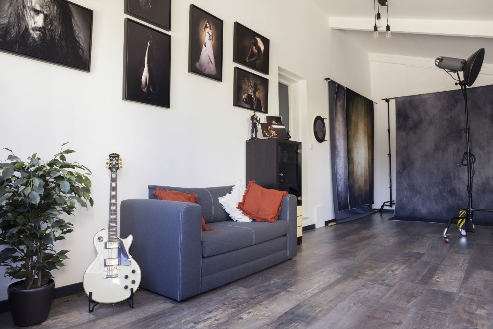

Forfait studio : Réalisation d'environ 10 photos retouchées en haute définition au format numérique. (Fichiers jpeg définition env. 8000 x 5300 pixels livrées via Dropbox).
Avant le shooting : Nous serons force de proposition et nous prendrons le temps de discuter ensemble de votre projet.
Le shooting dure entre 2 et 4 heures. Nous sommes à votre écoute et faisons en sorte de vous mettre à l'aise, en créant un lien et une complicité avec vous. Nous vous proposons plusieurs set-up d'éclairage et vous conseillons sur les tenues ainsi que les accessoires, foulard, chapeau, lunettes que vous aurez apportés....
- Nous travaillons presque toujours à 2. Nous nous connaissons parfaitement et nous complétons naturellement. Elle, avec sa grande créativité artistique; va vous guider, vous conseiller et vous mettre à l'aise devant l'objectif; lui, l'opérateur discr et, maitrisant parfaitement son matériel professionnel, gère la technique de la prise de vue. Nous sommes là pour faire de cette occasion un moment unique.
- Infiniment passionnés, nous ne comptons pas notre temps et nos efforts pour obtenir un résultat qui vous satisfera pleinement.
- La réalisation de portraits en studio est une expérience autant humaine que photographique.
Le shooting en atelier photos vous permettra de profiter d’une séance intimiste et personnalisée qui vous promet de passer un moment inoubliable.
Il révélera des expressions inattendues faites de spontanéité et d’émotions